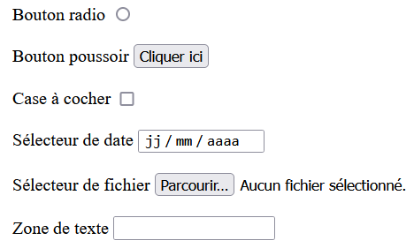

I. Interagir avec l'utilisateur¶
Cours¶
Les pages Web que vous avez créées jusqu'à présent avec du HTML et du CSS sont des pages statiques : elles ne sont pas modifiables. Nous allons créer des pages dynamiques en integrant des langages de programmation.
Un langage qui est devenu incontournable sur le Web pour créer des interactions avec l'utilisateur est le Javascript.
A. Intégrer du Javascript à une page Web¶
On a vu précédemment que pour associer un fichier CSS à un fichier HTML, il fallait ajouter la balise link dans l'entête. Pour associer un fichier en Javascript, c'est-à-dire en .js, à un fichier HTML, il faut aussi ajouter une balise dans ce fichier, comme sur l'exemple ci-dessous :
<!doctype html>
<html lang="fr">
<head>
<meta charset="utf-8">
<title>NSI - Le Web</title>
<link rel="stylesheet" href="style.css">
</head>
<body>
<h1> HTML, CSS, et maintenant Javascript </h1>
<p> Voici le contenu de ma page sur le Javascript.</p>
</body>
<script src="script.js"></script>
</html>
Quel est le nom de la balise utilisée ?
La balise utilisée est script.
Quel est le nom du fichier écrit en Javascript ?
Le nom du fichier est script.js.
Où se trouve la balise ?
Elle se trouve ici après la balise body (après la balise fermante).
B. Répondre à des évènements avec du Javascript¶
B.I. Les évènements¶
Le Javascript va nous permettre de répondre à des évènements, c'est à dire à des actions de l'utilisateur.
Comment l'utilisateur peut-il interagir avec une page ?
Il peut interagir avec la souris ou le clavier (des périphériques d'entrée de la machine). Avec la souris, il peut cliquer, on passer sur un élément d'une page.
Il existe un certain nombre d'évènements en HTML, dont voici une liste non-exhaustive :
| Evènement | Action |
|---|---|
onclick |
clic de souris sur un élément |
onmouseover |
survol d'un élément |
onmouseout |
fin du survol d'un élément |
onkeydown |
appui d'une touche du clavier |
onload |
chargement de la page |
B.II. Répondre aux évènements¶
Pour répondre à un évènement, comme un clic de souris sur un bouton, il faut associer l'évènement à une action par l'intermédiaire d'une fonction écrite en Javascript.
On insère un bouton sur la page HTML, et on l'associe à une fonction :
<button onclick="maFonction()">Cliquer ici</button>
Note : on peut aussi utiliser la balise
input, associée au typebutton.
La fonction maFonction doit être écrite dans le fichier script.js.
L'objectif de ce cours n'est pas que vous maîtrisiez le Javascript, mais que vous compreniez et sachiez modifier des codes simples.
Note sur le Javascript :
- Une variablevarse déclare avec le mot-clélet, et se modifie en utilisantvar = expression.
- On utilise la syntaxe suivante pour une condition :if (expression) {instructions}
- Une fonctionfse déclare avecfunction f(paramètres) {instructions}
Quelles différences identifiez-vous avec la syntaxe utilisée en Python ?
Les blocs d'instructions ne sont pas repérés par leur identation mais délimités par des accolades. Les mots-clés utilisés peuvent être différents, comme function à la place de def en Python.***
B.III. Exemple d'action sur le HTML¶
La fonction suivante est écrite en Javascript et permet de réaliser une action sur notre page :
function maFonction() {
let maBalise = document.getElementById("para1");
maBalise.classList.add("special");
}
Elle est associée au code HTML suivant (seul le body est représenté) :
<h1> HTML, CSS, et maintenant Javascript </h1>
<p> Voici le contenu de ma page sur le Javascript.</p>
<p id="para1"> Je veux changer l'apparence de ce paragraphe.</p>
<button onclick="maFonction()">Cliquer ici</button>
Le code HTML est associé au CSS suivant :
h1 {
text-align: center;
background-color: red;
}
p {
font-family: Verdana;
color: black;
}
.special {
color: blue;
font-size: 25px;
font-style: italic;
}
On a utilisé la fonction getElementById pour sélectionner un composant de la page HTML. Comment celui-ci est-il identifié ?
Il est identifiée par la valeur para1, qui correspond à l'identifiant d'un composant de notre page HTML.
Analyser la deuxième ligne du corps de maFonction pour comprendre ce qu'elle fait (utiliser les noms des fonctions).
Elle ajoute le composant stocké dans la variable maBalise à la classe special.
Que va-t-il se passer lorsque l'on cliquera sur le bouton ?
La classe special étant associée à un style différent, le contenu de para1 va alors s'afficher en bleu, italique, et en plus gros.
C. Le Document Object Model (DOM)¶
Si l'on peut accéder aux différents éléments d'une page HTML avec du Javascript, c'est grâce à sa représentation sous la forme d'une structure appelée Document Object Model (DOM).
Il représente hiérarchiquement les différentes balises d'une page HTML, qui deviennent, non plus juste du texte, mais un ensemble d'objets qui peuvent être manipulés. Ceux au-dessus des autres sont les "parents" des éléments "enfants".
graph TB
A(html) --> B(head)
A --> C(body)
B --> F(meta)
C --> H(h1)
C --> I(h2)
C --> K(p)Remarque :
Nous avons vu la fonction getElementById, permettant d'accéder à un élément par son id, mais il existe aussi :
- getElementByClassName permettant d'accéder aux éléménts d'une classe,
- getElementByTagName permettant d'accéder à tous les éléments d'un même type (p, h1,...),
- et encore d'autres.
TP : Composants graphiques et interactions sur le Web¶
Ouvrir le TP correspondant au code Capytale 3db2-1205102.
La page Web que nous allons étudier est codée avec du HTML et du Javascript. Contrairement à une page codée avec uniquement du HTML (et CSS), qui est dite statique, une page dans laquelle on utilise un langage de programmation comme le Javascript est dite dynamique. C'est-à-dire que l'utilisateur peut modifier la page, grâce à des composants graphiques.
A. Les composants graphiques¶
Pour insérer des composants graphiques de différents types, on utilise la balise <input type=...> dans le code HTML.
-
Identifier les composants graphiques présents dans la page, à partir de la liste ci-dessous :
 -
Identifier comment chacun des composants sont codés dans le code HTML, et compléter, pour chacun, la valeur de leur attribut
typeetid:
| Composant graphique | Valeur de l'attribut type |
Identifiant unique (attribut id) |
|---|---|---|
-
Dans le composant graphique de zone de texte, entrer un entier en décimal, à convertir. Sélectionner que vous voulez le convertir en binaire.
a. Que faut-il faire pour que le calcul de conversion soit lancé ?b. En regardant le code HTML, identifier à quel attribut du composant graphique identifié cette action peut être associée.
-
Rafraîchir la page.
a. Qu'est-ce qui a changé ?
b. Quel est l'attribut de la balise
bodyqui peut correspondre à cette action ?
Les attributs identifiés dans les questions 3 et 4 correspondent à des gestionnaires d'évènements, qui permettent l'exécution d'un code Javascript lorsqu'un évènement se produit. Cet évènement est déclenché par l'utilisateur.
B. Le code Javascript¶
Analysons le code Javascript de la fonction Calcul.
getElementById("valeur_id") permet d'accéder à l'élément dont l'identifiant est "valeur_id" (c'est une fonction un peu particulière, appelée "méthode"). Celui-ci étant unique, c'est une manière pratique d'accéder directement à un composant graphique par exemple.
1.
Décomposer la première instruction de la fonction Calcul :
entier = Number(document.getElementById("entier").value);
-
Partie de l'instruction qui renvoie la valeur du composant graphique ayant pour
idla valeur"entier":
-
Conversion d'une chaîne de caractères en nombre :
-
Stockage du nombre dans une variable :
-
La fonction teste la condition suivante :
document.getElementById("binaire").checked. Quel est le type renvoyé par cette expression ? Que teste-t-elle ?
-
Entrer un entier en décimal à convertir dans la zone de texte qui convient et cocher le bon bouton radio pour demander une conversion en hexadécimal.
a. Que se passe-t-il ?
b. Lire le code Javascript de la fonction
Calculet expliquer ce qu'il s'est passé.
-
Modifier la fonction
Calculpour que l'on puisse aussi faire la conversion en hexadécimal.
Indications sur le Javascript
- En Javascript, la déclaration d'une variable se fait avec le mot-clé
letsuivi du nom de la variable. - La méthode
nombre.toString(base)renvoienombresous la forme d'une chaîne de caractères, dans la basebase.
TP : De l'interaction à votre site Web¶
Nous allons reprendre vos pages HTML/CSS décrivant un film de votre choix, pour y ajouter de l'interactivité en permettant à un visiteur d'indiquer s'il a aimé le film que vous avez présenté, ou non.
- Ouvrir votre fichier
critique.htmldans votre éditeur de texte. - Créer un nouveau fichier
script.jset l'associer àcritique.htmlen rajoutant la ligne correspondante après lebody.
Ajouter à critique.html une partie contenant des statistiques sur le film :
- deux boutons poussoirs "J'aime" et "Je n'aime pas",
- deux zones de texte indiquant combien de fois on a cliqué, respectivement, sur "J'aime" et sur "Je n'aime pas",
- Un paragraphe indiquant la date et l'heure à laquelle la page a été chargée.
Exemple
Il faut donc que :
- un clic sur le bouton "J'aime" fasse appel à une fonction Ajouter_Aime(val) écrite en Javascript, ajoutant la valeur 1 à la valeur déjà indiquée dans la zone de texte correspondante,
- un clic sur le bouton "Je n'aime" pas fasse appel à une fonction Ajouter_AimePas(val) écrite en Javascript, ajoutant la valeur 1 à la valeur déjà indiquée dans la zone de texte correspondante,
- une fonction AfficheDate() soit appelée au chargement du corps de la page.
Indications :
- Les fonctions
Ajouter_Aime(val)etAjouter_AimePas(val)doivent être inspirées de la fonctionCalcul()du TP précédent, fait sur Capytale. Elles vont récupérer la valeur de la zone de texte correspondante, calculent sa nouvelle valeur en l'additionnant àval, puis modifie la valeur de la zone de texte. - La fonction
AfficheDate()fait référence à la fonctioninit()du même TP.
Exercices¶
Modifier la fonction Javascript maFonction() pour qu'un clic de souris :
- change la couleur du paragraphe para1 en rouge sans passer par l'association à une classe,
- modifie son texte.
- l'attribut
stylepermet de modifier les valeurs des sélecteurs du CSS, - l'attribut
innerHTMLpermet de modifier le contenu texte d'un élément du DOM.